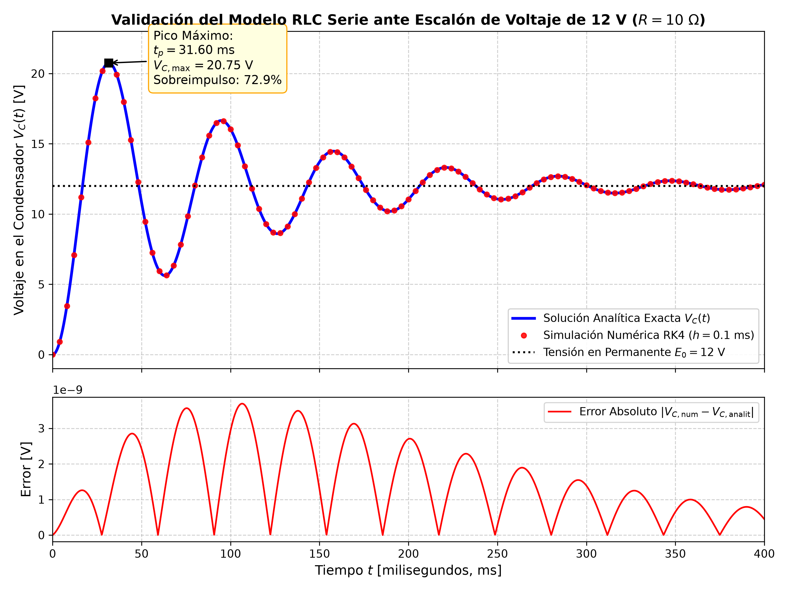
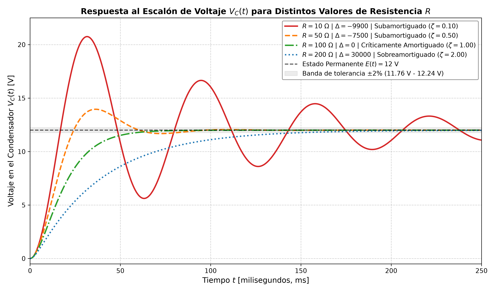
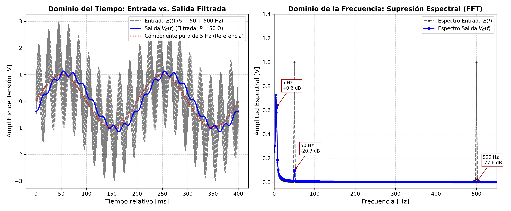
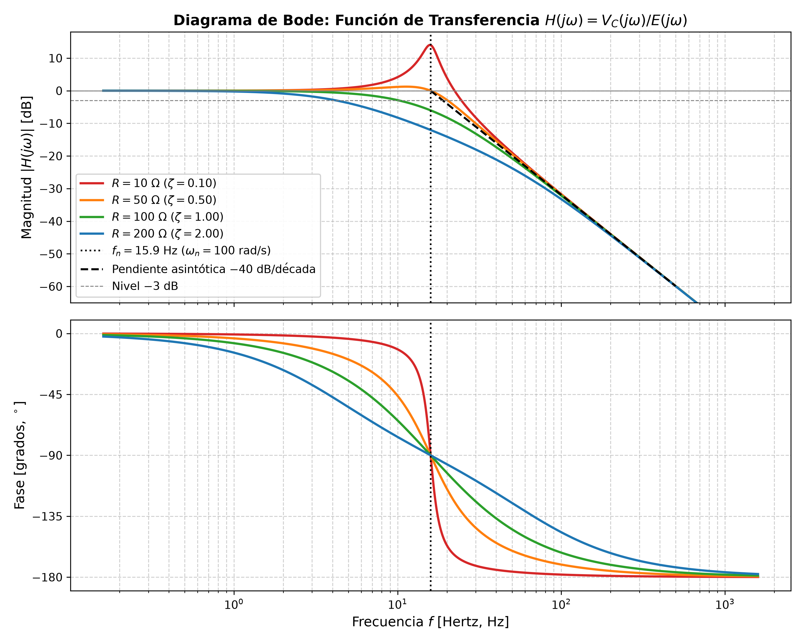

Integrantes del Grupo 3 & Roles de Sustentación
Equipo responsable del desarrollo matemático, implementación algorítmica y defensa oral:
Jessica Vanesa Acosta Galindez
Kevin Daniel Bermudez Zamora
Alvaro Jose Lopez Quira
Jorge Enrique Muñoz Dulcey
Diagrama de Polos en el Plano Complejo s (Lugar de las Raíces)
Representación geométrica de las raíces características $s_{1,2} = -\alpha \pm \sqrt{\alpha^2 - \omega_n^2}$ en el plano $\sigma + j\omega$
Raíces & Estabilidad de Lyapunov
Dado que $R > 0$ y $L > 0$, la parte real $\text{Re}(s) = -\alpha = -\frac{R}{2L} < 0$ se ubica estrictamente en el semiplano izquierdo abierto (LHP), garantizando que el transitorio decae exponencialmente a cero sin divergir.
Deducción Analítica a Mano (Rigor Matemático Formal)
Paso a paso exhaustivo desde las leyes físicas fundamentales hasta la solución exacta en el tiempo:
1. Origen Físico a partir de la Segunda Ley de Kirchhoff (KVL)
FÍSICA TEÓRICAEn una malla cerrada constituida por una fuente de fem $E(t)$, un inductor $L$, un resistor $R$ y un condensador $C$ en serie, la suma de diferencias de potencial satisface:
Aplicando las relaciones constitutivas microscópicas y macroscópicas:
Dado que la corriente es la derivada temporal de la carga neta $I(t) = \frac{dQ(t)}{dt} = Q'(t)$, derivamos nuevamente $\frac{dI}{dt} = Q''(t)$ y sustituimos:
2. Cálculo de la Frecuencia Natural ωn y Resistencia Crítica Rcr
PARÁMETROSPara $L = 0.5\text{ H}$ y $C = 200\,\mu\text{F} = 2 \times 10^{-4}\text{ F}$, la ecuación canónica homogénea $Q'' + \frac{R}{L} Q' + \frac{1}{LC} Q = 0$ define:
El amortiguamiento crítico ocurre cuando el discriminante característico $\Delta = R^2 - \frac{4L}{C}$ se anula:
3. Evaluación de los 4 Escenarios de Resistencia
CLASIFICACIÓN- $R = 10\,\Omega$: $\Delta = 100 - 10000 = -9900 < 0$ $\implies$ Subamortiguado ($\zeta = 0.10$). Raíces: $r = -10 \pm j 10\sqrt{99}\text{ rad/s}$. Gran sobreimpulso oscilatorio.
- $R = 50\,\Omega$: $\Delta = 2500 - 10000 = -7500 < 0$ $\implies$ Subamortiguado Moderado ($\zeta = 0.50$). Raíces: $r = -50 \pm j 50\sqrt{3}\text{ rad/s}$. Rápida atenuación.
- $R = 100\,\Omega$: $\Delta = 10000 - 10000 = 0$ $\implies$ Críticamente Amortiguado ($\zeta = 1.00$). Raíz real doble $r = -100\text{ s}^{-1}$. Respuesta más rápida sin sobreimpulso.
- $R = 200\,\Omega$: $\Delta = 40000 - 10000 = +30000 > 0$ $\implies$ Sobreamortiguado ($\zeta = 2.00$). Raíces reales distintas $r_1 \approx -26.79, r_2 \approx -373.21\text{ s}^{-1}$.
4. Solución Analítica Completa del Escalón de 12 V ($R = 10\,\Omega$)
SOLUCIÓN EXACTACon $E(t) = 12\text{ V}$ y reposo inicial $Q(0) = 0$, $I(0) = 0$:
Por coeficientes indeterminados, $Q_p(t) = \frac{12}{5000} = 2.4 \times 10^{-3}\text{ C} = 2.4\text{ mC}$.
Aplicando las condiciones iniciales para las constantes $C_1 = -0.0024\text{ C}$ y $C_2 = -\frac{0.0024}{\sqrt{99}}\text{ C}$, y dividiendo entre $C = 200\,\mu\text{F}$:
Laboratorio Virtual RLC en Tiempo Real (Algoritmo RK4)
Manipula los parámetros físicos del circuito con respuesta fluida a 60 FPS:
Parámetros del Circuito
Respuesta Temporal en Bornes del Condensador VC(t)
RK4 • 60 FPS FIJOSGalería Científica de Gráficas de Publicación (300 DPI)
Figuras generadas por el pipeline de computación científica en Python (`circuito_rlc.py`):

Figura 1: Validación Analítica vs. Numérica RK4
Superposición exacta de la solución calculada a mano vs. la simulación RK4 ($h = 0.1\text{ ms}$) para $R = 10\,\Omega$. El panel inferior demuestra un error máximo de $\|V_{C,\text{num}} - V_{C,\text{analit}}\|_\infty = \mathbf{3.69 \times 10^{-9}\text{ V}}$ (escala de nanovoltios).

Figura 2: Dinámicas para R = 10, 50, 100 y 200 Ω
Contraste transitorio ante escalón de 12 V: desde la fuerte oscilación subamortiguada del 72.9% ($10\,\Omega$) hasta el amortiguamiento crítico óptimo libre de sobreimpulso ($100\,\Omega$) y la lentitud del régimen sobreamortiguado ($200\,\Omega$).

Figura 3: Filtrado de Señal Multi-seno (5, 50 y 500 Hz)
Entrada $E(t)$ vs. salida $V_C(t)$ y espectro FFT para $R=50\,\Omega$: $5\text{ Hz}$ tiene una ganancia aproximada de $+0.4\text{ dB}$, $50\text{ Hz}$ se atenúa $-19.5\text{ dB}$ y $500\text{ Hz}$, $-59.9\text{ dB}$.

Figura 4: Diagrama de Bode en Magnitud y Fase
Función de transferencia $H(j\omega) = V_C/E$. Demuestra rigurosamente la pendiente asintótica de caída de $\mathbf{-40\text{ dB/década}}$ ($-12\text{ dB/octava}$) y el desfase de $-90^\circ$ en la frecuencia de corte $f_n \approx 15.9\text{ Hz}$.
Estudio Acústico & Procesamiento de Audio Real
Escucha las pistas de audio WAV procesadas por el circuito RLC o experimenta en vivo con el sintetizador de Web Audio API:
Acorde polifónico brillante con armónicos agudos (440 Hz a 3520 Hz) y chasquidos percusivos de 5 kHz.
Resultado de integrar muestra a muestra (154,350 pasos RK4, $dt = 22.7\,\mu\text{s}$) a través de la EDO del circuito. Pérdida total de agudos.
Sintetizador y Filtro RLC en Tiempo Real (Web Audio API)
Genera una señal polifónica rica en armónicos en tus propios altavoces y activa/desactiva el filtro pasa-bajo de 2do orden para escuchar el corte instantáneo:
Analogía Física Electromecánica Animada
Visualización sincronizada a 60 FPS: la masa con resorte y amortiguador oscila en perfecta coherencia matemática con las cargas del circuito RLC:
Cuadro Comparativo de Isomorfismo Matemático
| Propiedad | Sistema Mecánico | Circuito RLC Serie | Rol Físico |
|---|---|---|---|
| Desplazamiento | Posición $x(t)$ [m] | Carga $Q(t)$ [C] | Variable de estado acumulativa |
| Flujo | Velocidad $v(t) = \dot{x}$ [m/s] | Corriente $I(t) = \dot{Q}$ [A] | Tasa de transferencia |
| Inercia | Masa $m$ [kg] | Inductancia $L$ [H] | Oposición al cambio de velocidad/corriente |
| Disipación | Amortiguador $c$ [N·s/m] | Resistencia $R$ [$\Omega$] | Disipación irreversible de calor |
| Restitución | Constante $k$ [N/m] | Elastancia $1/C$ [F$^{-1}$] | Fuerza o potencial de recuperación |
| Excitación | Fuerza $F(t)$ [N] | Fuerza electromotriz $E(t)$ [V] | Forzamiento externo no homogéneo |
Teleprónter de Sustentación Oral (15 Minutos)
Cronómetro regresivo oficial dividido equitativamente (3 min 45 s c/u) con resaltado automático del expositor:
- Introducción y motivación acústica
- Deducción KVL y leyes constitutivas
- Cálculo de ωn = 100 y Rcr = 100 Ω
- Discriminantes Δ y 4 regímenes
- Solución analítica del escalón de 12V
- Parte homogénea Qh vs particular Qp
- Condiciones iniciales: C1, C2
- Analogía física Masa-Resorte
- Variables de estado [Q, I]
- Implementación manual de RK4
- Validación: Error 3.69 nV (L∞)
- Comparativa de las 4 resistencias
- Filtrado multi-seno (5, 50, 500 Hz)
- Diagrama de Bode: -40 dB/década
- Demostración de audio "bajo el agua"
- Conclusión de ingeniería (Butterworth)
Batería de Preguntas Difíciles del Evaluador (5 Minutos de Sustentación)
Preguntas conceptuales de alta exigencia preparadas con respuestas argumentadas:
- En el condensador ($Z_C = \frac{1}{j\omega C}$), para $\omega \to 0$, $Z_C \to \infty$ (circuito abierto), quedándose con toda la tensión de entrada; a alta frecuencia es cortocircuito. Es un filtro pasa-bajo.
- En el inductor ($Z_L = j\omega L$), a baja frecuencia es cortocircuito ($0\text{ V}$) y a alta frecuencia es circuito abierto ($\infty$). Por tanto, la tensión $v_L(t)$ constituye un filtro pasa-alto de segundo orden ($+40\text{ dB/década}$).
- En la resistencia ($v_R = R I$), a baja y alta frecuencia la corriente cae a cero, pero en la frecuencia de resonancia $\omega = \omega_n = \frac{1}{\sqrt{LC}}$, las reactancias inductiva y capacitiva se cancelan mutuamente ($j\omega L + \frac{1}{j\omega C} = 0$), transfiriendo toda la tensión a la resistencia ($|H_R| = 1$). Por tanto, la salida en la resistencia es un filtro pasa-banda.
Durante la primera etapa de carga ($0 < t < 31.57\text{ ms}$), el inductor almacena energía cinética magnética $E_L = \frac{1}{2} L I(t)^2$. Cuando la tensión del condensador iguala los $12\text{ V}$, la corriente sigue fluyendo por inercia inductiva. Al colapsar el campo magnético del inductor, este induce una fem autoinvertida ($v_L = -L \frac{dI}{dt}$) que actúa como una fuente adicional en serie con la batería, inyectando su energía magnética hacia el condensador en forma de energía electrostática adicional $E_C = \frac{1}{2} C V_C^2$. El balance de energía integrado $\int_0^t E(\tau) I(\tau) d\tau$ es estrictamente mayor que la energía almacenada en todo momento.
El método RK4 es estable en el eje imaginario hasta $|h \cdot \lambda| \le 2.78$. Con $f_s = 44100\text{ Hz}$, el paso temporal es $h = \frac{1}{44100} \approx 2.27 \times 10^{-5}\text{ s}$. Dado que la frecuencia natural más alta del sistema físico es $\omega_n = 100\text{ rad/s}$, el producto adimensional resulta: $$|h \cdot \omega_n| = (2.27 \times 10^{-5}\text{ s}) \times (100\text{ rad/s}) \approx 0.00227 \ll 2.78$$ Al estar más de mil veces por debajo del límite crítico de estabilidad de RK4, el integrador opera en régimen asintótico hiper-estable, garantizando la convergencia en nanovoltios ($10^{-9}\text{ V}$) observada.